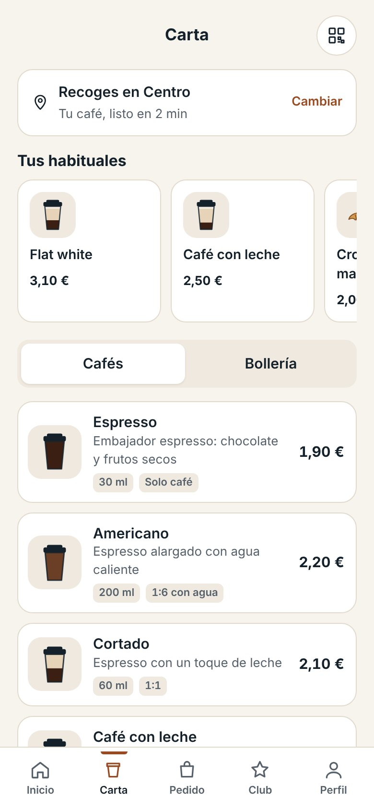
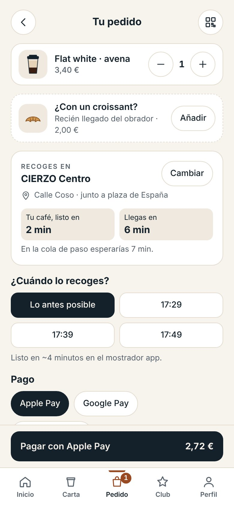
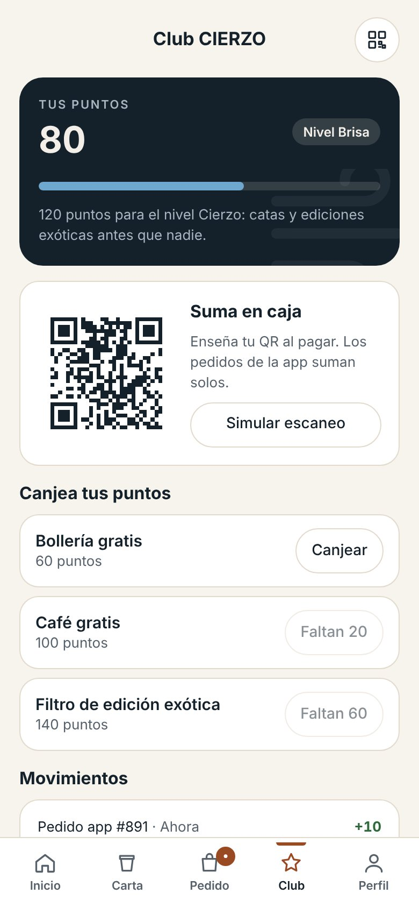

CIERZO: café para cafeteros. Sin colas.
Marca de café de especialidad para llevar en Zaragoza, creada desde cero. Se pide desde el móvil, se recoge sin cola en el mostrador app o en un punto partner, y cada pedido suma puntos en el Club CIERZO.
Tipo
Marca propia · omnicanal
Mi papel
Estrategia, público, propuesta de valor, app y lanzamiento
Canales
Tienda, app, Instagram, TikTok, LinkedIn y podcast
Presupuesto de lanzamiento
10.000 € repartidos en un trimestre
La app de la fase 1
Prototipo funcional: cada pantalla resuelve un paso del embudo, desde el registro con 20 % de bienvenida hasta el aviso de “tu pedido está listo”.

Cómo funciona, registro en un toque y 20 % en el primer pedido.

Pedir o repetir el último pedido, puntos y punto de recogida.

Tus habituales arriba; carta corta y purista de especialidad.

Leche entera, sin lactosa o avena, y descafeinado.

Venta cruzada, hora de recogida y pago móvil.

El punto más rápido ahora, en lista o en mapa.

Código de recogida y aviso “tu pedido está listo”.

QR personal, premios para canjear y niveles.
20 %
en el primer pedido, solo pagando en la app
10 pts
por café y 5 por bollería; 100 puntos, café gratis
2 niveles
Brisa y Cierzo, con catas y ediciones exóticas
4 puntos
de recogida en Zaragoza: tienda y partners
La estrategia
Propuesta de valor
Conveniencia primero
Pedir sin colas y recoger donde te venga bien. El buen café se da por hecho; lo que fideliza es el tiempo que ahorras.
Público objetivo
Buyer persona
20–35 años, estudia y trabaja
Activo en redes y siempre con prisa: quiere un café bueno sin perder tiempo en la cola.
Embudo de captación
Lanzamiento por fases
Fase 1 · Takeaway + app
Pre-pedido sin colas y Club de puntos
Fase 2 · Venta de grano
Ecommerce dentro de la propia app
Después · Cafeteras y B2B
Cafeteras propias y servicio a oficinas
Red de recogida
Una tienda y tres partners